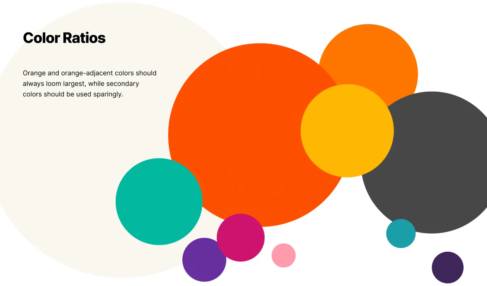
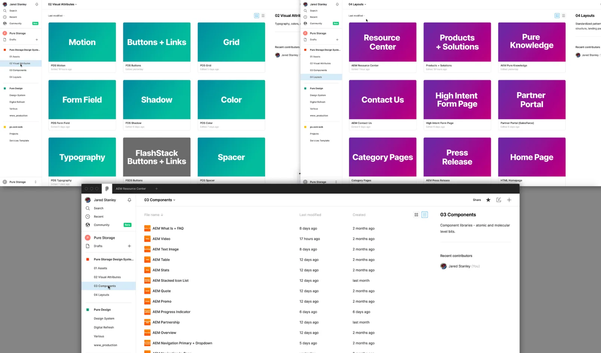
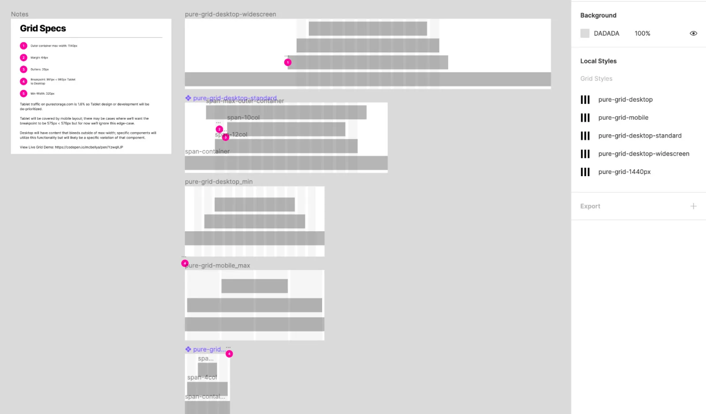
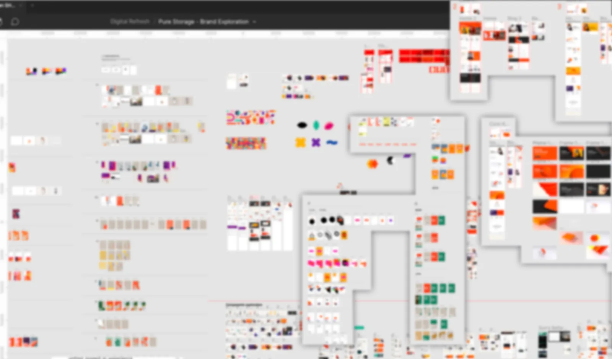
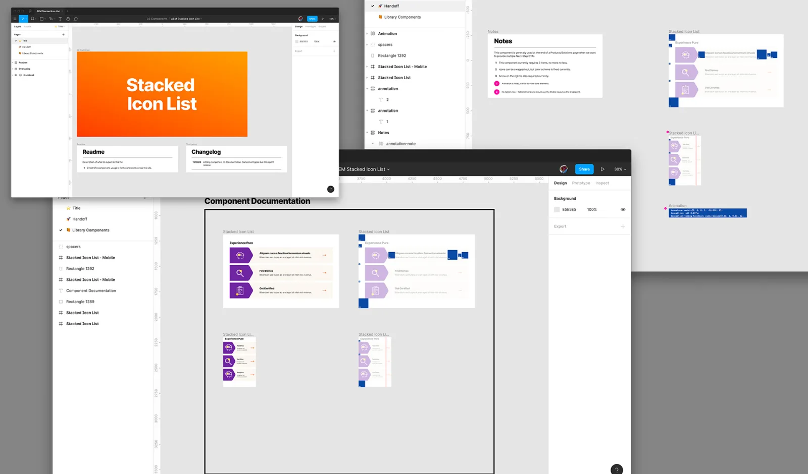
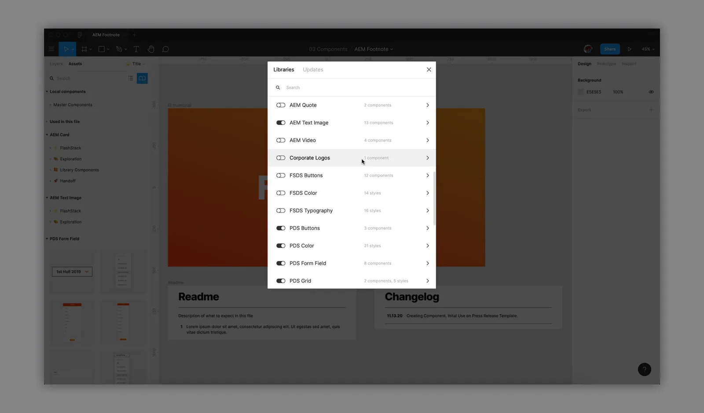

Design System: Pure Storage
I led the UX of a global rebrand for Pure Storage in 2020, encompassing everything from the layout grid to the interaction design.
I led the design-to-dev handoff process and established Pure's Design System from the atomic-level on up, and the rebuild of a completely new set of AEM Components.

Screenshot of Pure's new expanded color palette.
Objective
Pure's brand hadn't evolved much in the last few years.
The creative was often recycled and the brand felt restricting; Pure's primary orange color and icon was well-known within the industry but beyond that the brand didn't have any flexibility when it came to colors etc.
In recent years the company expanded beyond storage to include other data solutions and products, but their name still had 'Storage' in it and their stock ticker ($PSTG) used 3 of the 4 letters for 'Storage'.
Pure's brand needed an overhaul.
This initiative was led by our VP of Brand, Sun Lee.
Sun thinks big and initially wanted to change the company name, the logo, the stock ticker etc.
Eventually we settled on a much more tame version of a rebrand, primarily around design/fonts/components based on a re-defined set of core brand principles; that alone ended up being a big enough undertaking.

Figma Home Screens showing our different levels of elements, components and templates.
Foundation
Colors & Fonts
The design team worked with some outside agencies to help settle on a color palette. We also moved from Proxima Nova and opted to stay within what was available with Google Fonts for a number of reasons. We ended up with Inter a nd Space Mono.
Grid\
Pure's component system was the result of years of rapid growth; an accumulation of technical debt essentially removed any sort of standard responsive grid.
I advocated for this grid implementation with the dev team and was able to get this prioritized, as it was foundational to all the other parts of the system we were building.
We created global shared styles in Figma so that all our designers could work on the same grid to ensure consistency.

Pure's Grid System, documented here in Figma. Figma styles were created for consistency in all future page/component builds.
Design
Components
We spent a lot of time with messaging, deciding how to best present content at a system level in a way that aligned both to our brand principles and our actual content structures and narratives.
Initially we began with some atomic elements but then immediately jumped in to specific components, e.g. the 'Text + Image' component. This is a component we knew would be on most of the pages, and we knew we were creating a more illustrative style, so we wanted to establish design patterns at this level and base other components off of this.
Templates
As we progressed, design patterns began to emerge and we began to construct Page Templates, ensuring they worked together as a group of components visually and technically, as well as ensuring that they worked as a storytelling mechanism.
Designing a system is no easy feat; there are many considerations that Dev, Brand & Design, UX, SEO, Publishing, Content and Stakeholder teams all want to prioritize.
We zoomed in and out from a Micro, atomic level to a Macro, template/system level.
Resources were scarce and deadlines were tight, so we opted to only loosely organize components etc - Design documented each component for handoff to Dev, but formalizing documentation was deferred until post-launch and the system was more stable and established.

Screenshots of design comps (blurred). In the beginning the sky was the limit, and it felt great to be exploring all these different possible directions.
Organizing the System
There was still a ton of work to do once the site launched and the dust settled. The work was broken into 3 separate buckets:
Documentation/Organization
We needed to document these freshly-built components in the system and organize the files into a coherent structure.
Consolidation
We found many components solved the same problem, or that the mobile view on two different components were very similar. In these cases we replaced these components with different Variants of a single component or else aligned different mobile views to simplify the experience
Iteration
We reduced scope on most of the components to meet our deadline, and there was oversight on some elements (some small alignment issues etc). Additionally, stakeholders wanted more features once they got their hands on the site, and different teams began asking for improvements.
The system is broken down into Assets, Visual Attributes, Components and Layouts.
Each Components' Figma file contains the following:
1. Title Page - Consists of the thumbnail, readme and changelog.
2. Library Components Page - The components to be published to the shared library.
3. Handoff Page - This is primarily documentation for the Dev team and a list of the different variants to be referenced by the Design team.

Components each have their own Figma file.

Each Component is exported separately, when creating a new page layout the designer can turn on everything they need and immediately have access. Colors, Grid, Typography is all turned on at the team level so it's on by default for each project.
A word about Figma
I generally try to be tool-agnostic and use the best tool for the job.
Figma has turned me into a loyal fan.
I won't hesitate to consider new software tooling if something better comes along, but Figma is fantastic and this project was made 10x easier with Figma than without.
Shared Libraries, Auto-Layout, etc. have changed so much about how design and dev stay in sync, it's definitely a game-changer.
The Future
A design system needs to be treated like a product, or it's going to quickly show signs of neglect.
There's a backlog a mile long for feature requests, but thus far it's been a very successful launch.
↑Back to Top